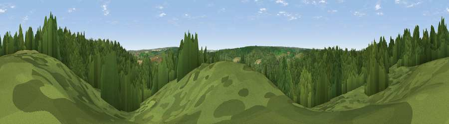

Viewpoint near Cuxton
#36718 in England · top 66% of its area beats it · near CuxtonThe view, rendered

A 360° render of this exact spot computed from the terrain model, tree cover and land cover — summer colours, afternoon light, calibrated against photographs of famous viewpoints. Real trees, hedges and buildings will differ in detail.
The panorama
Grey silhouette: terrain skyline in each direction (720 bearings, Earth curvature and refraction included). Dashed green: skyline with trees (+15 m) and buildings (+8 m) as obstacles. Blue strip: how far the ground is visible on each bearing.
Where the view opens
Wedge length = distance to the farthest visible ground on that bearing (vegetation-aware). Rings at 10, 25 and 50 km.
What fills the view
75% woodland · 15% grassland · 8% cropland · 2% built-up
Angular shares of the visible panorama (visual magnitude), not map area. Landscape diversity 0.34 (0–1 Shannon).
Key numbers
More beautiful places nearby
The staircase of upgrades: each row has a higher view potential than everything closer. Driving times are estimates from straight-line distance, calibrated against real road routing — check an actual route before setting out.
| Place | Direction | Drive | Score |
|---|---|---|---|
| Viewpoint near Cuxton | SSE · 2 km | ~6 min | 50.1 |
| Viewpoint near Halling | S · 3 km | ~7 min | 53.8 |
| Viewpoint near Shorne | N · 3 km | ~7 min | 55.1 |
| Viewpoint near Birling | SSW · 6 km | ~13 min | 65.2 |
| Viewpoint near Boxley | SE · 11 km | ~21 min | 68.6 |
| Viewpoint near Shipbourne | SW · 20 km | ~33 min | 69.1 |
| Viewpoint near Westwell | SE · 35 km | ~53 min | 72.2 |
| Viewpoint near Lympne | SE · 52 km | ~74 min | 72.6 |
51.38779, 0.43284 · source: screening · position refined by local search. Computed location — check access rights before visiting.